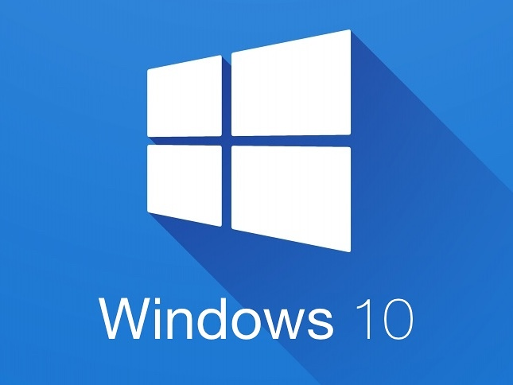
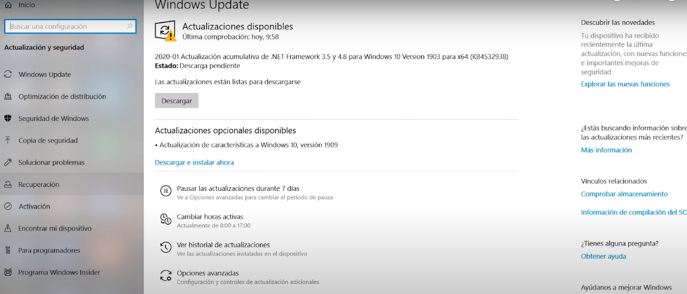
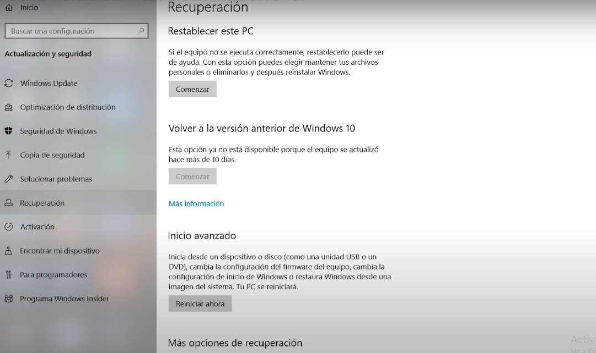
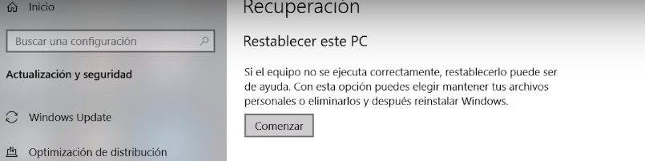
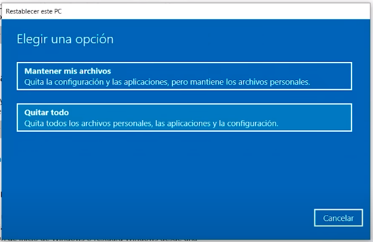

Windows 10 es un sistema operativo desarrollado por Microsoft. Fue lanzado el 29 de julio de 2015 y es la versión más reciente de la serie de sistemas operativos Windows. Windows 10 representa una evolución significativa respecto a las versiones anteriores, incorporando nuevas características, mejoras en el rendimiento y una interfaz más moderna.Windows 10 es un sistema operativo desarrollado por Microsoft. Fue lanzado el 29 de julio de 2015 y es la versión más reciente de la serie de sistemas operativos Windows. Windows 10 representa una evolución significativa respecto a las versiones anteriores, incorporando nuevas características, mejoras en el rendimiento y una interfaz más moderna.
tener en cuenta que al reiniciar el computador se eliminaran todos los archivos dentro de el por lo que es recomendable realisar algun tipo de copia si se tiene algunos documentos importantes
primer paso:
entrar al menu de inicio y dar click en configuraciones
luego nos dirigiremos a windows update
finalmente damos click en recuperacion
una vez hay damos click en recuperacion luego alli en restablecer este pc
tras realizar esa accion nos saldra una pantalla emergente donde daremos click en quitar todo
y listo ya esta hecho tras esto el pc se reiniciara y arrrancara desde cero